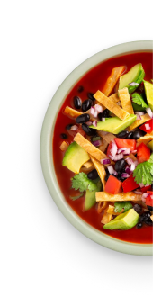
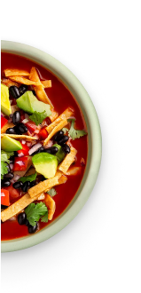

Sopa de tortilla
4
45 MIN
Media


BENEFICIOS DE LOS 50 ALIMENTOS DEL FUTURO
Frijoles negros
BUENO PARA TI
Ayudo a mejorar la función intestinal
Tengo un alto contenido en fibra, que puede ayudar a mantener tus intestinos saludables. Come frijoles y tu panza te lo agradecerá.
BUENO PARA EL MEDIO AMBIENTE
Nutro al suelo
Ayudo a transformar el nitrógeno del aire en un componente que las plantas necesitan para crecer, haciendo que la tierra sea más fértil para que otras plantas puedan florecer.